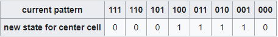
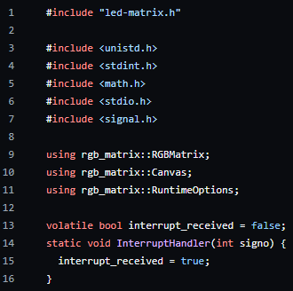

Rule 30 Cellular Automata on a Raspberry Pi
Published on:
Elementary Cellular Automata are simple mathematical models that explore the emergence of complex patterns from basic rules. They were introduced by mathematician Stephen Wolfram in the 1980s as a way to study the behavior of simple systems. It operates on a grid of cells, where each cell can exist in one of two states, often denoted as 0 or 1. 0 is a "dead" cell and "1" is an "alive" cell. Usually represented in a one-dimensional array, with binary encoding reflecting the cell states, these automata explore 256 possible rulesets, each corresponding to different combinations of cell and neighbor states. The evolution of these cells over discrete time steps (generations) is dictated by a set of simple rules.
I think that Elementary Cellular Automata are very interesting because they have very interesting properties that you would not expect from rules that are so simple. One of the rule sets of Elementary Cellular Automata that I think is the most interesting is Rule 30.
The Rule 30 ruleset:

The top row represents the current state of three consecutive cell, with each cell being either on (1) or off (0). The bottom row represents what happens to the middle cell in the next round based on the combination of states in the top row. So, for example: If the current state is 011, the middle cell in the next round will be turned on (1). If the current state is 111, the middle cell in the next round will be turned off (0). These rules are applied to every set of three cells in the row, and as it iterates to the next generation, the resulting pattern is used to create a new one. This process is repeated, and you can start to see the emergence of a complex and interesting pattern in the overall sequence of cells.I wanted to be able to implement this mathematical model into a project of my own. I had an idea to display Rule 30 onto my 64x32 pixel LED matrix that I had recently purchased using an extra Raspberry Pi I had laying around.
Here's how I did it:
First, I needed a way to display pixels onto my LED matrix. Luckily, there is a great library called rpi-rgb-led-matrix that can help me with this. This library supports Python, C#, and C++. I used C++ for this, but it is up to personal preference.
After making rpi-rgb-led-matrix a submodule of my project, I created a file where I am going to program Rule 30 and display it on my LED matrix. The code begins with essential includes and declarations. The led-matrix.h header is the main header from rpi-rgb-led-matrix that includes the necessary functionalities for working with LED matrices. The InterruptHandler function is set up to gracefully handle interrupts, ensuring a clean exit with "control+C".

The Rule 30 algorithm was translated into functional Python code. Each step involved in the cellular automata rules was meticulously programmed to accurately represent the intricate patterns. LED Matrix Integration: The LED matrix integration required establishing a connection between the Raspberry Pi and the display hardware. This involved configuring the GPIO pins and ensuring compatibility with the LED matrix library. Technical Aspects: Challenges and Optimizations: Mitigating hardware limitations, such as memory constraints on the Raspberry Pi, necessitated strategic optimizations. The Rule 30 algorithm underwent refinements to ensure efficient execution within the given environment. Display Enhancements: The visual presentation received attention in the form of customization. Tweaks included adjustments to color schemes and controlled speed modifications, refining the display for a more visually pleasing output. User Interaction (if applicable): Limited user interaction features were introduced to provide dynamic control over the automata display. This includes the ability to modify rules and interact with the visualizations. Code Snippets and Screenshots: Below, you'll find relevant code snippets and screenshots, providing a visual and technical glimpse into the Rule 30 Cellular Automata execution on the Raspberry Pi and its representation on the LED matrix. [Insert Code Snippets and Screenshots]